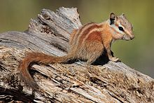
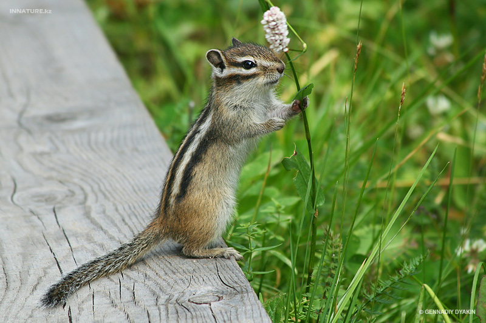
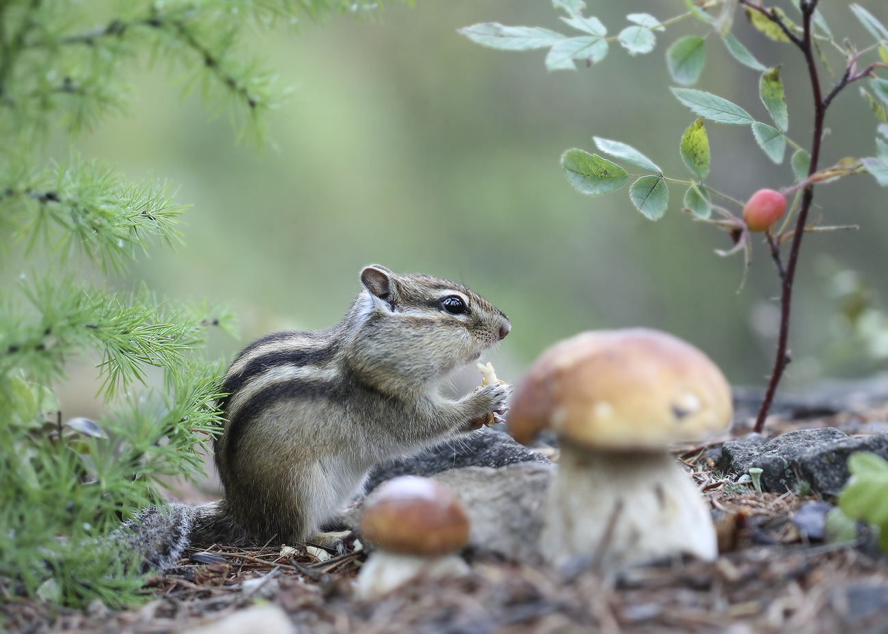

Образ жизни зимой
На зиму бурундуки впадают в спячку. Они просыпаются среди зимы, подкрепляются немного, а затем снова засыпают.

Образ жизни весной
Весной выходят из нор в разное время, смотря по тому, какая стоит погода. Те, у которых норы устроены на солнечном склоне и раньше освобождаются из-под снега, появляются раньше других. Если после тёплой погоды вновь холодает, бурундуки вновь уходят в норки и ждут потепления. Если в кладовых ещё сохранились запасы, то они поедают их.

Образ жизни летом
В жаркие летние дни бурундуки выходят из норок очень рано, ещё до восхода солнца, и ищут корм до наступления сильной жары. Под вечер, когда жар спадёт, они выходят снова и остаются на поверхности уже до заката солнца. В густом тенистом лесу, где особенной жары не бывает, зверьки не прячутся целый день.

Образ жизни осенью
В дождливую погоду пережидают в норах.
Источник